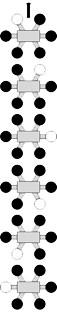
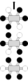
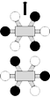
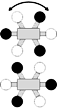
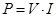

International Journal of Mechanical Engineering and Mechatronics (IJMEM)
ISSN: 1929-2724

Volume 1, Issue 2 - Year 2013 - Pages 1-6
DOI: 10.11159/ijmem.2013.001
A Miniature Legged Hexapod Robot Controlled by a FPGA
Ausama Ahmed, Michael Henrey, Pavel Bloch, Pranav Gupta, Cristian Panaitiu, Daniel Naaykens, Stefan Strbac, Lesley Shannon, and Carlo Menon
Simon Fraser University, School of Engineering Science
8888 University Dr., Burnaby, British Columbia, Canada
cmenon@sfu.ca
Abstract - The preliminary design of a robot for future planetary space applications is presented. This hexapod robot has legs inspired by the spider, which it uses to manoeuvre across horizontal surfaces. Designed as a scientific platform for future research, mechanically, this robot is lightweight, compact and modular. A Field Programmable Gate Array (FPGA) is used as a controller, with one soft processor controlling each leg, adding additional modularity. This robot is shown to be capable of walking across horizontal surfaces, and future versions will be capable of climbing vertically, using bio-inspired dry adhesives.
Keywords: Legged robot, hexapod, FPGA, gait.
© Copyright 2015 Authors This is an Open Access article published under the Creative Commons Attribution License terms. Unrestricted use, distribution, and reproduction in any medium are permitted, provided the original work is properly cited.
Date Received: 2013-08-30
Date Accepted: 2013-11-03
Date Published: 2013-11-20
1. Introduction
Legged robots can be dexterous, and are capable of complex motions. Robots using other locomotion mechanisms, for example wheel-legs, [1, 2], or tank-tracked systems [3, 4] are often limited in the environments that they may traverse. Applications of legged robots include working in environments that are unsafe for humans.
The level of autonomy in legged robots varies. Some legged robots have no electronics on board [5] while others employ microcontrollers [6] onboard real time systems [7], off board control [8, 9] or a combination of the preceding systems [10]. Robots with on-board control systems have potential for more autonomy, and could be used in applications where response time is critical or communication rates are too slow to allow off-board control.
Sizes of legged robots vary from millirobot [11] to a bigger than real sized dog [12]. Robots with up to 16 legs have been reported [5]. Robots with more legs may have a higher factor of safety, for example if one leg fails or is unable to contact the surface, the other legs can support the robot [10]. However a robot with more legs requires a more complex control system.
Some legged robots are also capable of climbing. To climb, the robot must adhere to a wall. Some common adhesives are dry adhesives, [6], spines or claws , [7] [8, 10, 13], magnets [14, 15] and suction [16, 17]. Independently of the adhesion mechanism, most of the legged climbing prototypes proposed in the literature have a relatively high mass (e.g. the robots proposed by [7, 8, 10, 14] have masses respectively equal to 8kg, 2kg, 3.8kg, and 16.4 kg), which limits the robots' agility. In this work, a new approach is proposed to design a compact and lightweight legged robot towards the future development of a novel climbing platform.
This paper is presented in the following manner: A system overview is given in Section II, the subsystem-level design of the robot is presented in Section III, the completed prototype and its capabilities are discussed in Section IV and this paper concludes with some future perspectives for this robot in Section V.
2. System Overview
This robot was designed in a modular and hierarchical manner. A block diagram of the robot is given in Figure 1, showing the processing, electronic and mechanical layers. The processing layer was implemented on a Field Programmable Gate Array (FPGA). This layer was responsible for high-level robot decisions and contains low-level control systems for each leg. With this architecture, n+1 processors are required for an n-legged robot, one processor was used for the high-level control and one processor was used for low-level control of each leg. The electronics layer was implemented on a custom Printed Circuit Board (PCB), and it contained n sets of interface electronics. These provided a means of communication between the processors on the FPGA and their corresponding robot leg. The robot legs were implemented in the mechanical layer. Six legs were chosen for the implementation of this robot. The stability of a six legged robot while walking or climbing can be higher than a robot with fewer legs; if the robot uses a tripod gait then three legs always remain on the ground. While climbing, a more conservative pentapedal gait is possible, which keeps a larger area of adhesive on the climbing surface.
The modular and hierarchical design maximized flexibility. Upgrading any of the processing, electronic or mechanical layers (for example selecting new motors or changing the leg design) could be done independently of the other layers, as long as the interface is kept consistent. Increasing the number of legs would require a new processor to be instantiated on the FPGA (a relatively simple change), small updates in the function executed by the main processor (synchronizing between 7 instead of 6 processors), and a set of interface components to be added in the electronics layer (a more difficult change).
The body and frame are printed on a 3D printer (InVision HR 3D printer). This allowed rapid iterations of the mechanical design, as well as new parts to be printed when mechanical failure occurred. The 3D printer material is lightweight, and helped keep the mass low at 548 g. The robot was also compact, capable of fitting in a cuboid of 16 cm x 16 cm x 12 cm.
The robot was designed to be capable of walking, rotating, and in the future climbing and transferring from a horizontal to vertical surface.
3. Robot Design
3. 1. Mechanical Design
Each leg of the robot was designed to be fabricated using a three-dimensional (3D) printer, with 3 degree-of-freedom (DOF) each. The schematic of one leg is shown in Figure 2. Link 1 is 3 cm in length and link 2 is 3.5 cm. The range of the joints is given in Table 1.
Table 1. Joints' range for the joints of the leg.
|
Joint |
Range (degree) |
|
Joint 1 |
180° |
|
Joint 2 |
135° |
|
Joint 3 |
110° |
Depending on the range of one leg, the workspace is shown in Figure 3, which was obtained by using the methodology presented in [18].
The workspace of the legs allows the robot to have a maximum height of 4 cm. The robot can also go over obstacles up to 4 cm in height.
The frame of the robot (chassis) can be chosen to be in any shape, our current one is chosen to distribute the legs around the FPGA board, although our design allows us to use any shape to arrange the legs with. To decrease the stress on the frame and the weight, two thin frames with a separator are used instead of one solid thick frame.
The motors used for each joint were the 150:1 Micro Metal Gearmotor HP (Pololu). A DC gearmotor was chosen over other actuator types for its high torque to mass ratio, fast response time and small size. This specific motor was the smallest one we found which also had sufficient torque to lift the robot up a wall during climbing.
The design of the robot allows the use of different legs with different configurations, which allows it to mimic the insects in nature; also the legs are distributed around the body in pattern similar to spiders.
3. 2. Electronic Design
The electronics layer distributed power to the FPGA, motors and sensors, and provided an interface between the FPGA and the sensors and actuators. The FPGA and electronics were designed as separate layers, stacked on each other, so that either the FPGA or electronics could be replaced with a new version.
Motor control is accomplished using Pulse Width Modulation (PWM) signals from the FPGA, through motor drivers (MPC17550, Freescale). A PWM frequency of 20 kHz was used. Position feedback was obtained from potentiometers (SV01L, Murata) mounted at each joint. Hall effect sensors with digital output were also considered for position feedback, but the magnets were found to affect multiple sensors when joints were brought close to each other. The potentiometers had a dead-zone region, but this was acceptable because the linear region of the potentiometer was larger than the joint ranges. Analog signals from the potentiometer were read using a delta-sigma Analog Digital Converter (ADC) instantiated on the FPGA, which required the use of an external comparator (MAX9144, Maxim). This ADC and comparator system had a maximum sampling frequency of 2 kHz and resolution of 10 bits. A block diagram of the electronics system is given in Figure 4.
3.3. Control System and Software
The high-level and low-level control systems were implemented on an FPGA (Spartan 3A, Humandata). The processing layer closely paralleled the electrical and mechanical layers of the robot. Each leg had a processor (MicroBlaze, Xilinx) responsible for the low-level control of that leg, and one additional processor was responsible for the high level control of the robot.
An FPGA was chosen over other computing systems because of its flexibility. If a higher power computing system is needed, a newer generation FPGA could be used, for example one with an ARM processor. If additional legs are added to the robot, because of the parallel design, the low-level control system update frequency is not reduced.
4. Results and Testing
4.1. Implemented Prototype
A photo of the robot with its legs extended is shown in Figure 5. The wires connected to the robot are the power and JTAG cables. The robot walking with 2 legs forward gait is shown in Figure 6.
The robot in Figure 5 and Figure 6 has the PCB board mounted below Joint 1, which takes 1.3cm from the maximum height of the robot to become 2.7cm. Maximum height is the maximum distance between the tip of the leg and the lowest point of the robot's body. The PCB is mounted a bit lower to bring the centre of gravity closer to the ground which gives more stability to the robot. Mounting the PCB higher does not provide much difference in stability while walking.
4.2. Robot Capabilities
The robot has an open-loop walking mechanism. It uses pre calculated trajectories to move its legs. It was given a set of trajectories to execute, in order to display its capabilities. The robot can walk using different gaits and with its legs attached to the body at different positions. Figure 7 shows some possible distributions of the legs around the body of this robot: configurations (a, b and e) have equally spaced legs distributed on all sides of the body; configuration (d) has legs distributed on all sides of the body, but without equal spacing between legs; and configurations (c and f) have legs on only 2 sides of the body. All of these arrangements use a square body frame, which can easily be realized with a chassis with mounting spaces along its outer circumference.
The robot was tested in walking on a horizontal surface with different gaits and fixed speed. Time required for each gait is shown in Table II. The legs of the robot are numbered as shown in Figure 8. The front left leg is numbered as 1, front right leg as 2, middle right leg as 3, rear right leg as 4, rear left leg as 5 and the middle left leg as 6.
1-leg forward gait is moving one leg at a time; it starts with moving leg 1 then moving the following legs in order, 2, 3, 4, 5 and 6. The 2-legs forward gait is moving 2 legs at a time, it is implemented by moving two legs across, it starts with moving legs 1 and 4, then legs 2 and 5 and finally legs 3 and 6. Walking gaits used have a step size of 2 cm, and the amount of rotation is 5o. Note that the final step (moving all the legs to the original position at the same time to bring the body to its initial position) is not included in the schematic row in Table2.
Table 2. Steps for The Different Tested Gaits.
|
Configuration Name |
1-leg forward |
2-legs forward |
3-legs forward |
3-legs rotation |
|
Schematic |
 |
 |
 |
 |
|
Elapsed Time (s) |
6.0 |
4.2 |
2.8 |
2.8 |
The fastest gait observed was when 3 legs were moved at a time, because of the steps needed to execute that gait (4 steps). Depending on the robot's application, choosing a 1 leg forward gait is sometimes more suitable especially in case of heavy load, because the load will be distributed among five legs minimum instead of three.
The power consumption of the robot was also tested using 2 legs forward gait from Table II, with different walking speeds. The voltage supplied to the robot was fixed to be 5V, and the current was recorded for a few complete walking cycles, and then averaged. The power was calculated using the following equation:
|
 |
(1) |
where P is the power, V the voltage and I the current. The relationship between the power consumption against the speed is plotted in Figure 9.
5. Conclusion and Future Work
This robot prototype was a first step towards developing a climbing robot. It is able to walk in any direction and rotate, unlike other walking robots [5, 10], which can walk only in one direction. A system capable of traversing horizontal surfaces with a number of dexterous motions was been presented.
One future step for this project will be to use the robot with dry adhesives. This will allow the robot to climb vertical surfaces and to transfer from horizontal to vertical surfaces. Changes to the mechanical layer include a foot design that holds the adhesive will be needed. Determining leg trajectories that allow climbing will be necessary.
Implementing a force controller is another possibility for future work. This could be useful for climbing; if forces at the feet can be measured and controlled, detecting potential falls is possible, and preventative action can be taken. At the mechanical layer, new force sensors will be necessary. At the processing layer, the new controllers will have to be programmed to use the force information.
References
[1] M. P. Murphy, C. Kute, Y. Menguc, M. Sitti, "Waalbot II: Adhesion Recovery and Improved Performance of a Climbing Robot using Fibrillar Adhesives", The International Journal of Robotics Research, 30, 1, 118-133, 2010. View Article
[2] K. A. Daltorio, A. D. Horchler, S. Gorb, R. E. Ritzmann, R. D. Quinn, "A small wall-walking robot with compliant, adhesive feet", IEEE/RSJ International Conference on Intelligent Robots and Systems, 3648-3653, Edmonton, Canada: IEEE, 2005. View Article
[3] O. Unver, M. Sitti, "Tankbot: A Palm-size, Tank-like Climbing Robot using Soft Elastomer Adhesive Treads", The International Journal of Robotics Research, 29(14), 1761–1777, 2010. View Article
[4] J. Krahn, Y. Liu, A. Sadeghi, C. Menon, "A tailless timing belt climbing platform utilizing dry adhesives with mushroom caps", Smart Materials and Structures, 20(11), 115021, 2011. View Article
[5] O., Unver, M. Sitti, "A miniature ceiling walking robot with flat tacky elastomeric footpads", IEEE International Conference on Robotics and Automation, 2276–2281, 2009. View Article
[6] A. Asbeck, S. Dastoor, A. Parness, L. Fullerton, N. Esparza, D. Soto, B. Heyneman, M. Cutkosky, "Climbing rough vertical surfaces with hierarchical directional adhesion", IEEE International Conference on Robotics and Automation, 2675–2680, 2009. View Article
[7] A. Parness, "Anchoring foot mechanisms for sampling and mobility in microgravity", IEEE International Conference on Robotics and Automation, 6596–6599, 2011. View Article
[8] A. Sintov, T. Avramovich, A. Shapiro, "Design and motion planning of an autonomous climbing robot with claws", Robotics and Autonomous Systems, 59(11), 1008–1019, 2011. View Article
[9] Y. Li, A. Ahmed, D. Sameoto, C. Menon, "Abigaille II: toward the development of a spider-inspired climbing robot", Robotica, 1-11, 2011. View Article
[10] M. Spenko, G. Haynes, J. Saunders, M. Cutkosky, and A. Rizzi, "Biologically Inspired Climbing with a Hexapedal Robot" Journal of Field Robotics, 25(4-5), 223–242, 2008. View Article
[11] N. J. Kohut, A. M. Hoover, K. Y. Ma, S. S. Baek, R. S. Fearing, "MEDIC: A legged millirobot utilizing novel obstacle traversal", IEEE International Conference on Robotics and Automation, 802–808, 2011.View Article
[12] M. Raibert, K. Blankespoor, G. Nelson, R. Playter, "BigDog , the Rough-Terrain Quaduped Robot", Proceedings of the 17th World Congress, Seoul, Korea, 10822–10825, 2008. View Article
[13] L. R. Palmer III, E. D. Diller, R. D. Quinn, "Design of a Wall-Climbing Hexapod for Advanced Maneuvers" International Conference on Intelignet Robots and Systems, St. Louis, 2009. View Article
[14] Z. Xu, P. Ma, "A wall-climbing robot for labelling scale of oil tank's volume", Robotica, 20, 2, 209–212, 2002. View Article
[15] W. Shen, J. Gu, Y. Shen, "Permanent magnetic system design for the wall-climbing robot", Applied Bionics and Biomechanics, 3,3, 151–159, 2006. View Article
[16] N. Elkmann, T. Felsch, M. Sack, T. Böhme, J. Hortig, J. Saenz, "Modular climbing robot for service-sector applications", Industrial Robot: An International Journal, 26, 6, 460–465, 1999. View Article
[17] B. L. Luk, D. S. Cooke, S. Galt, A. A. Collie, S. Chen, "Intelligent legged climbing service robot for remote maintenance applications in hazardous environments", Robotics and Autonomous Systems, 5, 2, 142–152, 2005. View Article
[18] J. A. Hansen, K. C. Gupta, S. M. K. Kazerounian, "Generation and Evaluation of the Workspace of a Manipulator" The International Journal of Robotics Research, 2,3, 22–31, 1983. View Article